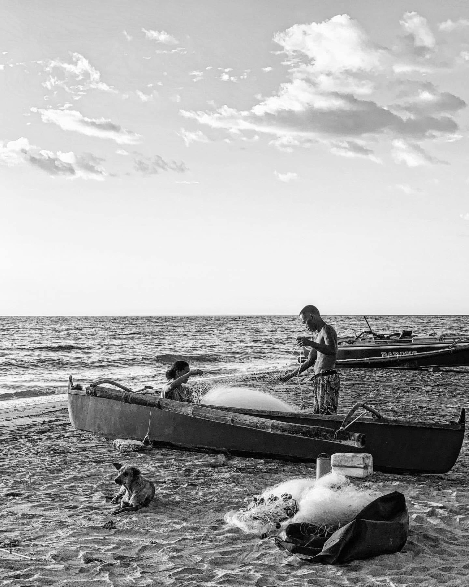
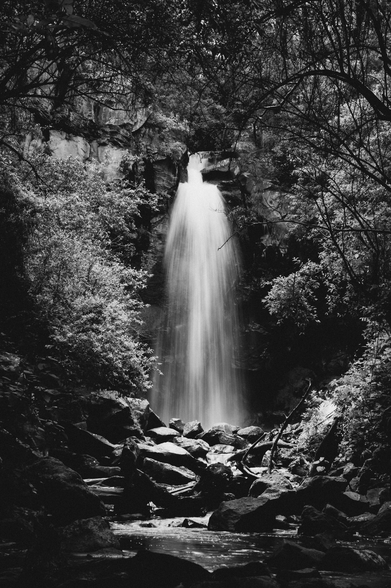

Section One
#1: People

I chose to describe the location of the photo because it gives
context to the rest of the photo. I also chose to describe the two
people in the photo and what they are doing. I also chose to
describe the dog in the photo as it is hard to miss.
Image source:
https://www.pexels.com/photo/fishermen-preparing-nets-by-sea-shore-33569401/
#2: Text
I chose to describe the coffee cup which is the subject of the
photo. I also described what was written on it becasue it is the
main focus of the photo. Image source:
https://www.pexels.com/photo/close-up-photo-of-black-ceramic-mug-3806690/
#3: Other

I chose to describe the subject of the photo: a waterfall in the
forest. Also, I chose to bring to light the where the photo was
taken from. I chose to describe the color palette of the photo
because it brings focus to the waterfall. Image source:
https://www.pexels.com/photo/serene-waterfall-in-monochrome-forest-setting-33652980/
Section Two
#1: People. The beach is a very important part of the photo as it gives the setting to the photo and it also is what takes up most of the photo. I could have described how the beach is layed out in more detail describing the water. It would be useful to go into more detail about the background of the photo if where a photo focusing on the beaches. I chose not to include it because I felt the focus shoudld be more on the people and dog in the photo. I didn't have to describe the people's location and action as much but I felt it necessary to include so you know what is going on in the photo
#2: Text. The text on the coffee cup is the main focus of the phot and wouldn't be able to not describe it without chnaging what the photo is about. I could have been more desribtive the font of the text if context of the photo was about different fonts and their affects. I didn't have to be as descriptive about the color of the coffe cup but felt it necessary to help better picture the photo in your mind.
#3: Other. The water fall is the main aspect of the photo so it was always going to end up in the description. I could have been more decritptive about the forest around the waterfall if the context of the photo was more about location but I felt the waterfall was the main focus. I didn't have to be as descriptive about the color pallet of the photo bit I felt it was important to include as it brings focus to the waterfall.